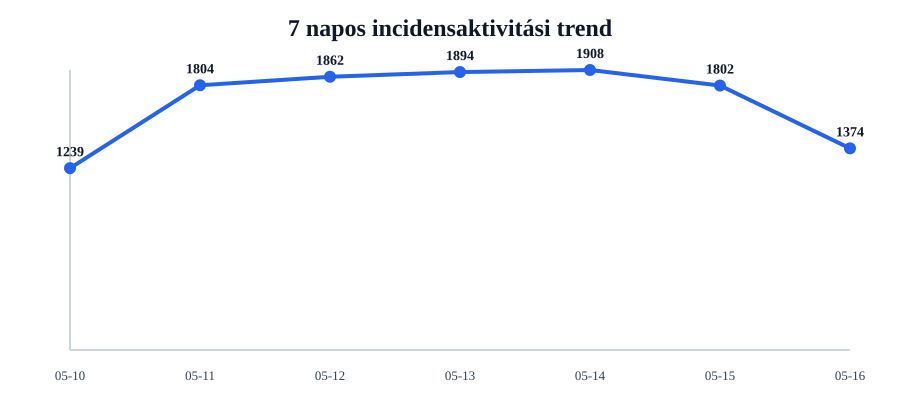
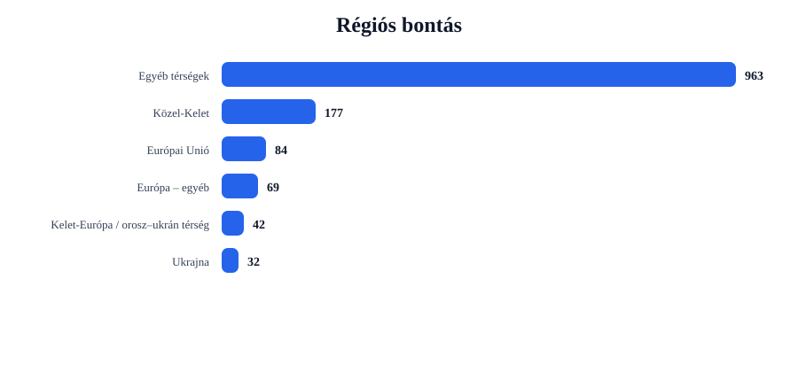
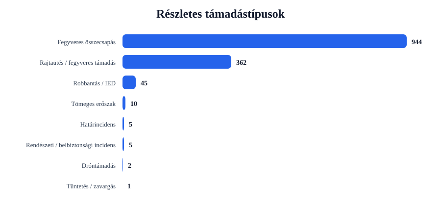
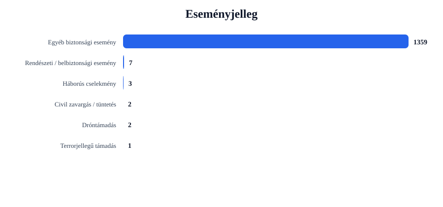

Rövid napi értékelés
Az incidensek száma csökkent: -428 esemény, 23.8% visszaesés.
A legtöbb találat ehhez az országhoz kapcsolódott: United States (426 esemény).
A legerősebb regionális súlypont: Egyéb térségek (963 esemény).
A leggyakoribb részletes támadástípus: Fegyveres összecsapás (944 találat).
A leggyakoribb eseményjelleg: Egyéb biztonsági esemény (1359 találat).
A drón-, terrorjellegű és háborús események felismerése kulcsszavas besorolással történik. Ez jó elemzési szűrő, de kézi ellenőrzést továbbra is igényelhet.
Régiós helyzetkép
Európai Unió
Azonosított események száma: 84. Leginkább érintett országok: Germany (14), France (11), Spain (10).
Domináns támadástípusok: Fegyveres összecsapás (58), Rajtaütés / fegyveres támadás (25), Robbantás / IED (1). Domináns eseményjelleg: Egyéb biztonsági esemény (83), Terrorjellegű támadás (1).
| Cím | Ország | Helyszín | Részletes típus | Eseményjelleg | Forrás |
|---|---|---|---|---|---|
| fight – Hanover, Niedersachsen, Germany | Germany | Hanover, Niedersachsen, Germany | Robbantás / IED | Terrorjellegű támadás | www.wsws.org |
| assault – Italy | Italy | Italy | Rajtaütés / fegyveres támadás | Egyéb biztonsági esemény | www.news4jax.com |
| fight – Germany | Germany | Germany | Fegyveres összecsapás | Egyéb biztonsági esemény | www.yumasun.com |
| fight – France | France | France | Fegyveres összecsapás | Egyéb biztonsági esemény | www.indiewire.com |
| fight – Paris, France (general), France | France | Paris, France (general), France | Fegyveres összecsapás | Egyéb biztonsági esemény | mymixfm.com |
Ukrajna
Azonosított események száma: 32. Leginkább érintett országok: Ukraine (32).
Domináns támadástípusok: Robbantás / IED (22), Fegyveres összecsapás (6), Rajtaütés / fegyveres támadás (4). Domináns eseményjelleg: Egyéb biztonsági esemény (32).
| Cím | Ország | Helyszín | Részletes típus | Eseményjelleg | Forrás |
|---|---|---|---|---|---|
| fight – Odesa, Odes'ka Oblast, Ukraine | Ukraine | Odesa, Odes'ka Oblast, Ukraine | Robbantás / IED | Egyéb biztonsági esemény | www.mdjonline.com |
| fight – Kherson, Khersons'ka Oblast', Ukraine | Ukraine | Kherson, Khersons'ka Oblast', Ukraine | Robbantás / IED | Egyéb biztonsági esemény | www.independent.ie |
| fight – Dubovoye, Odes'ka Oblast, Ukraine | Ukraine | Dubovoye, Odes'ka Oblast, Ukraine | Robbantás / IED | Egyéb biztonsági esemény | www.smdailyjournal.com |
| fight – Konstantinivka, Odes'ka Oblast, Ukraine | Ukraine | Konstantinivka, Odes'ka Oblast, Ukraine | Robbantás / IED | Egyéb biztonsági esemény | www.globalsecurity.org |
| assault – Oleksandrivka, Odes'ka Oblast, Ukraine | Ukraine | Oleksandrivka, Odes'ka Oblast, Ukraine | Robbantás / IED | Egyéb biztonsági esemény | www.dailykos.com |
Balkán
Azonosított események száma: 7. Leginkább érintett országok: Kosovo (2), Turkey (2), Serbia (1).
Domináns támadástípusok: Fegyveres összecsapás (7). Domináns eseményjelleg: Egyéb biztonsági esemény (7).
| Cím | Ország | Helyszín | Részletes típus | Eseményjelleg | Forrás |
|---|---|---|---|---|---|
| fight – Serbia | Serbia | Serbia | Fegyveres összecsapás | Egyéb biztonsági esemény | www.gazetaexpress.com |
| fight – Istanbul, Istanbul, Turkey | Turkey | Istanbul, Istanbul, Turkey | Fegyveres összecsapás | Egyéb biztonsági esemény | www.siasat.com |
| fight – Turkey | Turkey | Turkey | Fegyveres összecsapás | Egyéb biztonsági esemény | globalnews.ca |
| fight – Skenderaj, Srbica, Kosovo | Kosovo | Skenderaj, Srbica, Kosovo | Fegyveres összecsapás | Egyéb biztonsági esemény | www.gazetaexpress.com |
| fight – Belgrade, Serbia (general), | Serbia (general) | Belgrade, Serbia (general), | Fegyveres összecsapás | Egyéb biztonsági esemény | tiranaexaminer.com |
Közel-Kelet
Azonosított események száma: 177. Leginkább érintett országok: Israel (36), Iran (24), West Bank (23).
Domináns támadástípusok: Fegyveres összecsapás (123), Rajtaütés / fegyveres támadás (48), Tömeges erőszak (5). Domináns eseményjelleg: Egyéb biztonsági esemény (176), Dróntámadás (1).
| Cím | Ország | Helyszín | Részletes típus | Eseményjelleg | Forrás |
|---|---|---|---|---|---|
| fight – Shahed, Fars, Iran | Iran | Shahed, Fars, Iran | Dróntámadás | Dróntámadás | www.naturalnews.com |
| fight – Beirut, Beyrouth, Lebanon | Lebanon | Beirut, Beyrouth, Lebanon | Fegyveres összecsapás | Egyéb biztonsági esemény | www.spacewar.com |
| fight – Israel | Israel | Israel | Fegyveres összecsapás | Egyéb biztonsági esemény | www.spacewar.com |
| fight – Gaza, Israel (general), Israel | Israel | Gaza, Israel (general), Israel | Fegyveres összecsapás | Egyéb biztonsági esemény | www.mankatofreepress.com |
| fight – Iran | Iran | Iran | Fegyveres összecsapás | Egyéb biztonsági esemény | www.csmonitor.com |
Kelet-Európa / orosz–ukrán térség
Azonosított események száma: 42. Leginkább érintett országok: Russia (39), Belarus (2), Moldova (1).
Domináns támadástípusok: Robbantás / IED (22), Fegyveres összecsapás (15), Rajtaütés / fegyveres támadás (5). Domináns eseményjelleg: Egyéb biztonsági esemény (42).
| Cím | Ország | Helyszín | Részletes típus | Eseményjelleg | Forrás |
|---|---|---|---|---|---|
| fight – Ryazan, Ryazanskaya Oblast', Russia | Russia | Ryazan, Ryazanskaya Oblast', Russia | Robbantás / IED | Egyéb biztonsági esemény | theshillongtimes.com |
| fight – Belgorod, Belgorodskaya Oblast', Russia | Russia | Belgorod, Belgorodskaya Oblast', Russia | Robbantás / IED | Egyéb biztonsági esemény | www.naturalnews.com |
| fight – Zapad, Irkutskaya Oblast', Russia | Russia | Zapad, Irkutskaya Oblast', Russia | Robbantás / IED | Egyéb biztonsági esemény | sputnikglobe.com |
| fight – Volgograd, Volgogradskaya Oblast', Russia | Russia | Volgograd, Volgogradskaya Oblast', Russia | Robbantás / IED | Egyéb biztonsági esemény | www.eng.kavkaz-uzel.eu |
| fight – Plesetsk, Arkhangel'skaya Oblast', Russia | Russia | Plesetsk, Arkhangel'skaya Oblast', Russia | Robbantás / IED | Egyéb biztonsági esemény | spacedaily.com |
Európa – egyéb
Azonosított események száma: 69. Leginkább érintett országok: United Kingdom (60), Oceans (3), Switzerland (2).
Domináns támadástípusok: Fegyveres összecsapás (54), Rajtaütés / fegyveres támadás (14), Tömeges erőszak (1). Domináns eseményjelleg: Egyéb biztonsági esemény (69).
| Cím | Ország | Helyszín | Részletes típus | Eseményjelleg | Forrás |
|---|---|---|---|---|---|
| assault – London, London, City of, United Kingdom | United Kingdom | London, London, City of, United Kingdom | Rajtaütés / fegyveres támadás | Egyéb biztonsági esemény | www.seattletimes.com |
| fight – London, London, City of, United Kingdom | United Kingdom | London, London, City of, United Kingdom | Fegyveres összecsapás | Egyéb biztonsági esemény | www.nbcnewyork.com |
| fight – United Kingdom | United Kingdom | United Kingdom | Fegyveres összecsapás | Egyéb biztonsági esemény | www.brisbanetimes.com.au |
| assault – United Kingdom | United Kingdom | United Kingdom | Rajtaütés / fegyveres támadás | Egyéb biztonsági esemény | www.zerohedge.com |
| fight – Cambridge, Cambridgeshire, United Kingdom | United Kingdom | Cambridge, Cambridgeshire, United Kingdom | Fegyveres összecsapás | Egyéb biztonsági esemény | www.gazetteandherald.co.uk |
Egyéb térségek
Azonosított események száma: 963. Leginkább érintett országok: United States (426), India (108), Nigeria (98).
Domináns támadástípusok: Fegyveres összecsapás (681), Rajtaütés / fegyveres támadás (266), Határincidens (5). Domináns eseményjelleg: Egyéb biztonsági esemény (950), Rendészeti / belbiztonsági esemény (7), Háborús cselekmény (3).
| Cím | Ország | Helyszín | Részletes típus | Eseményjelleg | Forrás |
|---|---|---|---|---|---|
| assault – Tankara, Gujarat, India | India | Tankara, Gujarat, India | Rajtaütés / fegyveres támadás | Háborús cselekmény | economictimes.indiatimes.com |
| assault – Guaviare, GuainíCO, Colombia | Colombia | Guaviare, GuainíCO, Colombia | Dróntámadás | Dróntámadás | english.elpais.com |
| fight – Pasquotank County, North Carolina, United States | United States | Pasquotank County, North Carolina, United States | Fegyveres összecsapás | Háborús cselekmény | wcti12.com |
| fight – Naval Base San Diego, California, United States | United States | Naval Base San Diego, California, United States | Fegyveres összecsapás | Háborús cselekmény | eturbonews.com |
| fight – Searsmont, Maine, United States | United States | Searsmont, Maine, United States | Fegyveres összecsapás | Egyéb biztonsági esemény | www.wtol.com |
Grafikonos áttekintés




Top 5 kiemelt esemény
| # | Cím | Ország | Helyszín | Részletes típus | Eseményjelleg | Súly | Forrás |
|---|---|---|---|---|---|---|---|
| 1 | fight – Hanover, Niedersachsen, Germany | Germany | Hanover, Niedersachsen, Germany | Robbantás / IED | Terrorjellegű támadás | 26 | www.wsws.org |
| 2 | fight – Odesa, Odes'ka Oblast, Ukraine | Ukraine | Odesa, Odes'ka Oblast, Ukraine | Robbantás / IED | Egyéb biztonsági esemény | 21 | www.mdjonline.com |
| 3 | fight – Kherson, Khersons'ka Oblast', Ukraine | Ukraine | Kherson, Khersons'ka Oblast', Ukraine | Robbantás / IED | Egyéb biztonsági esemény | 19 | www.independent.ie |
| 4 | fight – Ryazan, Ryazanskaya Oblast', Russia | Russia | Ryazan, Ryazanskaya Oblast', Russia | Robbantás / IED | Egyéb biztonsági esemény | 18 | theshillongtimes.com |
| 5 | fight – Dubovoye, Odes'ka Oblast, Ukraine | Ukraine | Dubovoye, Odes'ka Oblast, Ukraine | Robbantás / IED | Egyéb biztonsági esemény | 18 | www.smdailyjournal.com |
Napi bontások
Régiók
- Egyéb térségek963
- Közel-Kelet177
- Európai Unió84
- Európa – egyéb69
- Kelet-Európa / orosz–ukrán térség42
- Ukrajna32
- Balkán7
Országok
- United States426
- India109
- Nigeria98
- United Kingdom60
- Pakistan41
- Russia39
- Israel36
- Canada35
- Ukraine32
- Australia29
Részletes típusok
- Fegyveres összecsapás944
- Rajtaütés / fegyveres támadás362
- Robbantás / IED45
- Tömeges erőszak10
- Határincidens5
- Rendészeti / belbiztonsági incidens5
- Dróntámadás2
- Tüntetés / zavargás1
Eseményjelleg
- Egyéb biztonsági esemény1359
- Rendészeti / belbiztonsági esemény7
- Háborús cselekmény3
- Civil zavargás / tüntetés2
- Dróntámadás2
- Terrorjellegű támadás1
Források
- eturbonews.com43
- www.globalsecurity.org37
- www.dailymail.com35
- www.yahoo.com32
- punchng.com30
- www.dailykos.com26
- www.thecable.ng24
- www.hindustantimes.com23
- timesofindia.indiatimes.com22
- dailytrust.com20
Blogra használható összefoglaló kép
Ez az automatikusan generált kép csak a négy kiemelt térséget mutatja: Európai Unió, Balkán, Közel-Kelet és Ukrajna.
Módszertani megjegyzés
Ez a jelentés nyílt forrású, automatizált adatgyűjtés alapján készül. A dróntámadások, terrorjellegű események és háborús cselekmények azonosítása kulcsszavas besorolással történik. Ez elemzési támpont, nem hivatalos minősítés.